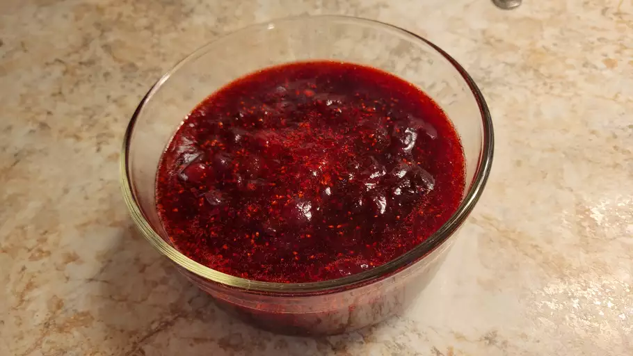

Cranberry Sauce Recipe

Description
This cranberry sauce uses fresh cranberries, sugar, and orange juice to make a Thanksgiving classic.
Ingredients
- Fresh Cranberries
- Sugar
- Orange Juice
Steps
- Gather all ingredients.
- Dissolve sugar in the orange juice in a medium saucepan over medium heat.
- Stir in the cranberries and cook until they start to pop, about 10 minutes.
- Remove from heat and place in a bowl. It will thicken as it cools.